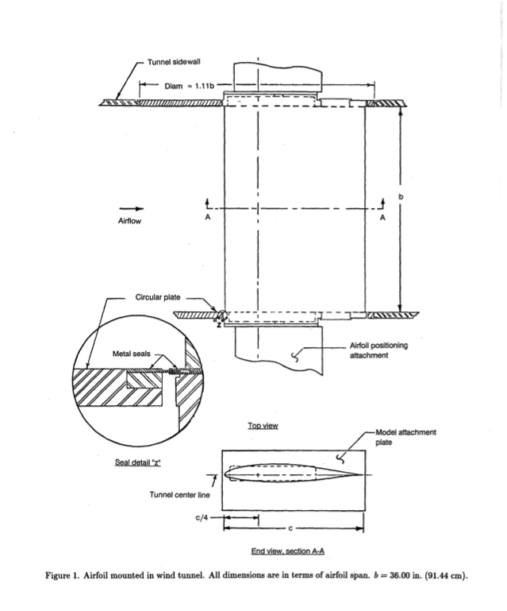
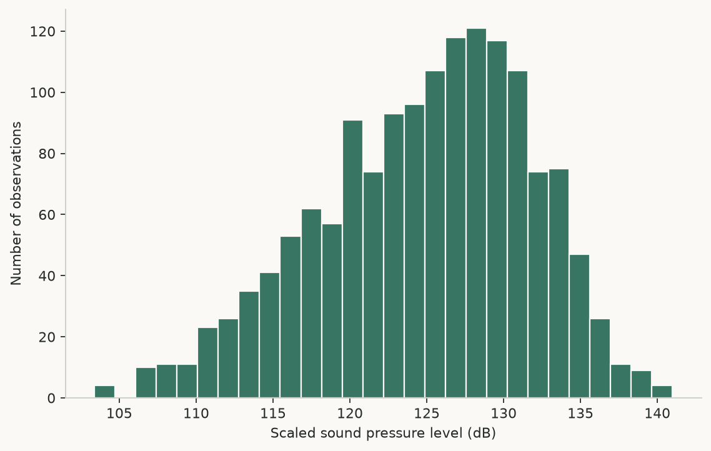
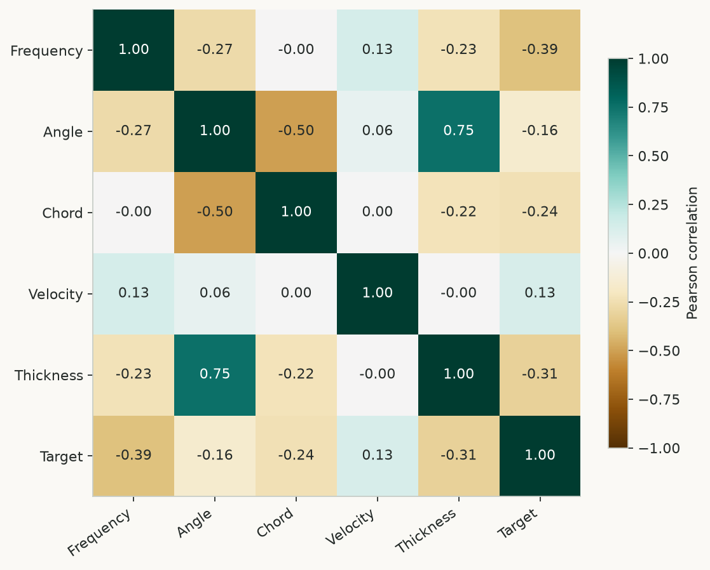
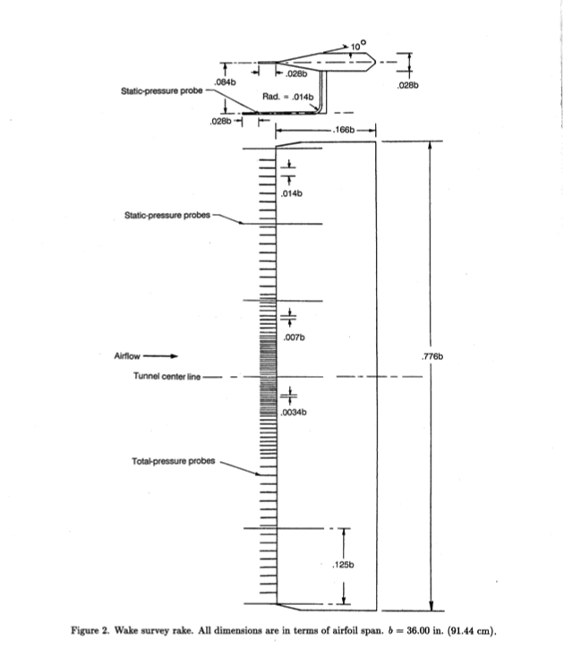
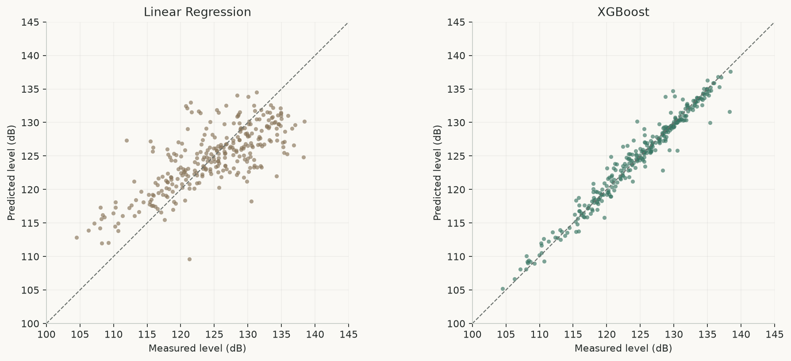
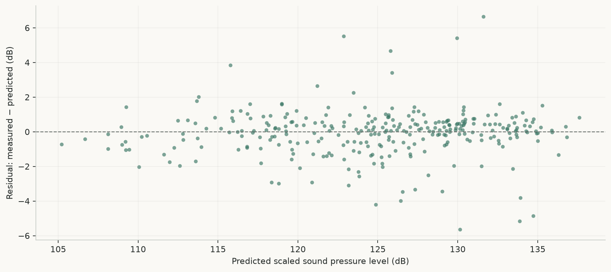
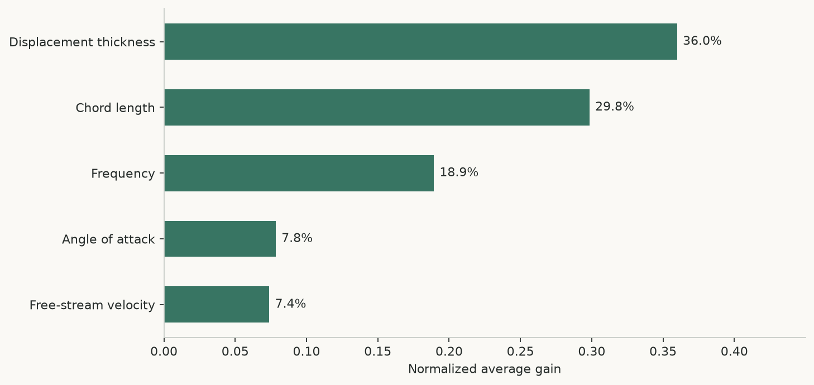

NACA 0012 Airfoil Noise Prediction
Machine Learning-Based Prediction of Aerodynamic Self-Noise
{kind=link}

Project links: Repository | Data information | Source code | README
Abstract
This project investigates the prediction of aerodynamic self-noise from five experimental variables using machine-learning regression. A linear regression baseline is compared with a tuned XGBoost regressor on the NASA Airfoil Self-Noise dataset. Evaluation of the saved XGBoost model on 301 holdout observations gives R² = 0.9620, RMSE = 1.380 dB and MAE = 0.899 dB. The repository includes data preparation, model training, persisted estimators and a Streamlit inference interface. These results concern a random split of the available wind-tunnel measurements; transfer to other experimental conditions has not been established.
1. Introduction
Airfoil self-noise varies with frequency, geometry and flow conditions. Understanding this acoustic response is relevant to the analysis of aircraft and wind-energy components. The objective here is to estimate scaled sound pressure level from measured inputs and assess whether gradient-boosted trees improve on an ordinary least-squares baseline.
The project demonstrates a data-driven approximation within the measured domain. It does not calculate aerodynamic stress, efficiency or operational safety.
2. Dataset
The NASA Airfoil Self-Noise dataset, distributed through the UCI Machine Learning Repository, contains 1,503 wind-tunnel observations of NACA 0012 airfoils. Span and observer position were fixed. The checked-in data has five predictors, one continuous target, no missing values and no duplicate rows.
| Variable | Unit | Observed range |
|---|---|---|
| Frequency | Hz | 200–20,000 |
| Angle of attack | ° | 0–22.2 |
| Chord length | m | 0.0254–0.3048 |
| Free-stream velocity | m/s | 31.7–71.3 |
| Suction-side displacement thickness | m | 0.000400682–0.0584113 |
| Scaled sound pressure level (target) | dB | 103.380–140.987 |
The target is stored as Sound_Pressure_Level. The raw .csv file is tab-separated and headerless; the processed CSV adds names without changing the numeric observations. Physical checks print warnings and do not remove or reject rows. Numeric values in this report retain the decimal-point notation of the source outputs in both languages.
The following descriptive figures use all 1,503 observations; they are not estimates of prediction accuracy.
{kind=link}

{kind=link}

3. Methodology
Experimental configuration
The original measurements were obtained under controlled wind-tunnel conditions. The historical drawing below illustrates the wake survey instrumentation used downstream of the airfoil.
{kind=link}

- Load the observations and inspect distributions, correlations and basic physical consistency.
- Split randomly into 80% training data (1,202 rows) and 20% test data (301 rows), with random_state=42.
- Fit StandardScaler on the training predictors only, then transform both subsets with that scaler.
- Fit an ordinary least-squares linear regression baseline. If its holdout R² is below 0.85, proceed to XGBoost.
- Tune XGBoost using five-fold GridSearchCV and negative mean squared error: 54 parameter combinations, 270 CV fits and a final refit.
- Evaluate on the holdout, persist the estimators and scaler with Joblib, and use these saved artifacts for Streamlit inference.
The saved final estimator uses 300 trees, maximum depth 7, learning rate 0.1, subsample 0.8, seed 42 and a squared-error objective. The original search results are not retained, so optimality of these settings cannot be independently verified.
The published figures reconstruct the original split and apply the saved scaler, whose mean, variance and sample count match the reconstructed training set. No model was retrained. The original comparison notebook evaluates all rows, including training observations; those full-data metrics must not be interpreted as holdout results.
Evaluation evidence: full-precision metrics, split indices and artifact hashes.4. Model Comparison
| Model | R² | MAE (dB) | RMSE (dB) |
|---|---|---|---|
| Linear Regression (baseline) | 0.5583 | 3.672 | 4.704 |
| XGBoost (final model) | 0.9620 | 0.899 | 1.380 |
XGBoost reduces RMSE by approximately 70.7% relative to the linear baseline on this split. MAE is an average absolute discrepancy, not a maximum error. R² describes explained variance on the evaluated split, not a percentage of correct predictions.
5. Results
| R² | 0.9620 |
|---|---|
| RMSE | 1.380 dB |
| MAE | 0.899 dB |
| Holdout observations | 301 |
{kind=link}

{kind=link}

The original README reported an imprecise MAE of 0.89 dB. The saved model yields 0.899117 dB, which rounds to 0.90 dB at two decimal places.
6. Feature Importance
Suction-side displacement thickness and chord length have the highest normalized average gain in the saved XGBoost model, followed by frequency. Gain measures improvement in the training objective at tree splits. It indicates neither effect direction nor causality, and correlated predictors can redistribute importance. This is not a SHAP analysis.
{kind=link}

7. Prediction Interface Preview
This static preview does not calculate predictions. GitHub Pages cannot execute Python or load the saved models. Actual inference requires the Python backend in the Streamlit application.
For inference, run the following command from the repository root after installing the Python dependencies:
streamlit run app/app.pyNo live Streamlit deployment URL is recorded in the repository.
8. Project Architecture
NACA-0012-Airfoil-Noise-Prediction/
├── data/ # raw and processed observations
├── src/ # data loading, training, evaluation
├── models/ # saved estimators and scaler
├── notebooks/ # EDA and full-data comparison
├── app/ # Streamlit inference interface
├── tests/ # artifact and inference checks
├── scripts/ # evidence generation and validation
├── docs/ # static technical report
└── main.py # training entry point
The data loader, trainer and metric utilities are separate modules. Joblib stores both estimators and the shared training scaler. Automated tests check artifact loading and inference; the report-generation script records split indices, artifact hashes and environment versions. The complete original training environment and search logs are not available.
Software used: Python, Pandas, NumPy, Scikit-learn, XGBoost, Joblib, Matplotlib, Seaborn, Streamlit and Pytest. The report itself uses static HTML, CSS and JavaScript.
9. Limitations and Future Work
The study considers 1,503 measurements and two model families. Random training and test rows may share aerodynamic configurations; performance on unseen conditions or other airfoils remains unverified. External validation, uncertainty estimation and causal analysis are not implemented. The existing trainer fits scaling before cross-validation, so validation-fold statistics enter that preprocessing step, although the holdout is excluded.
Proposed further work (not implemented)
- Group validation by experimental condition and evaluate independent measurements.
- Fit preprocessing within each CV fold and retain complete tuning records.
- Investigate feature effects with permutation importance or SHAP; evaluate calibrated prediction intervals.
- Package a versioned inference API and extend physical input validation.
10. References and Resources
- Brooks, T., Pope, D., & Marcolini, M. (1989). Airfoil Self-Noise. UCI Machine Learning Repository. DOI: 10.24432/C5VW2C. Dataset description.
- Project repository
- README: installation, usage and testing (English)
- Original analysis notebooks
- Verified metrics, split indices and artifact hashes
- Repository analysis (English)
- GitHub Pages deployment guide (English)
- Validation record (English)
Dataset license: CC BY 4.0, as listed by UCI. The repository has no declared source-code license.